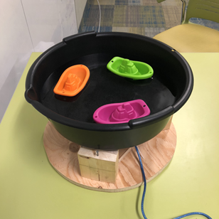
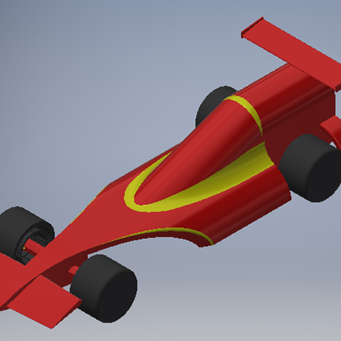
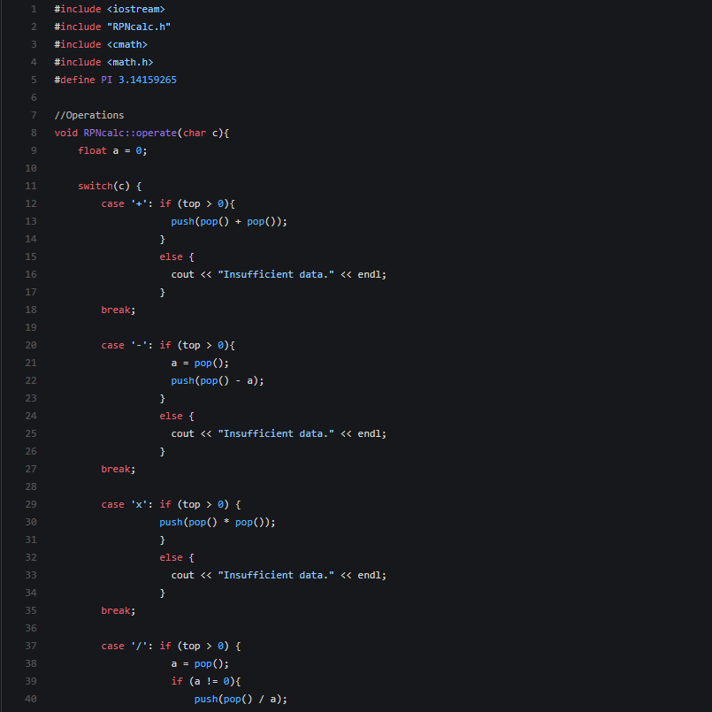
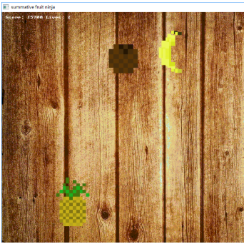

J A M E S C H E N
P R O J E C T S
HealthOnTrack
Developed at UOttahack 2019, this project allows users to track their calorie and macro intake throughout the day. Users can set customized limits for their maximum daily intake of each nutrient, and the app will tell you what percentage of your daily intake you have reached. This project was developed in Python, and made use of the PyQt5 library for its front end.

Arduino RC Car
I created this arduino car in a group of three as my grade 12 CS summative. The car had three modes: "RC mode", where the car was controlled by the user via bluetooth and a remote control app on their phone, "Autopilot mode", where the car used distance sensors in order to navigate like a roomba and "Line Follower mode", where the car used a light sensor to follow black lines on the ground. This project was made using an Arduino UNO and programmed in the Arduino Language.

Toy Boat Display
This display case was made as my final design project in my first term at UW. The display case had a feature where the boats travelled in a circle like magic within the basin. This was achieved by attaching magnets to an arduino stepper motor which rotated underneath the display case, and having these attract magnets that were attached to the bottoms of the model boats in the display case. I used SolidWorks and AutoCAD to create preliminary models, and also used power tools in order to assemble the actual display case.
F1 Model Car
In my grade 12 calculus and vectors class, we were split into groups of four and were given the task to design a model F1 race car and compete against others in our class. We used AutoCAD in order to model our vehicle before having it 3D printed. Throughout this project, we went through multiple iterations of our vehicle, and did various tests on each car, such as acceleration, velocity, etc., and used excel to model our data and decide what to change in the car. My group ended up winning the in-class competition.
RPN Calculator
This Reverse-Polish-Notation calculator was made for my grade 12 computer science class. It was a project that combined all of the software development concepts that we had learned up until that point, including linked lists, stack, classes and inheritance aswell as front end design. I developed the calculator in C++, and used the Allegro 5 graphics library to design the GUI.
Fruit Ninja
For my grade 11 computer science summative, I decided to create a version of the famous Fruit Ninja mobile game for desktop. The game had all of the features from the original game's classic mode, including bombs and keeping track of the user's score. I created this project in C, incorporating various concepts such as structures, and used the Allegro 4 library in order to create the graphics.

james.chen2@uwaterloo.ca
613-600-9672
Work-in-progress. Copyright © James Chen 2019